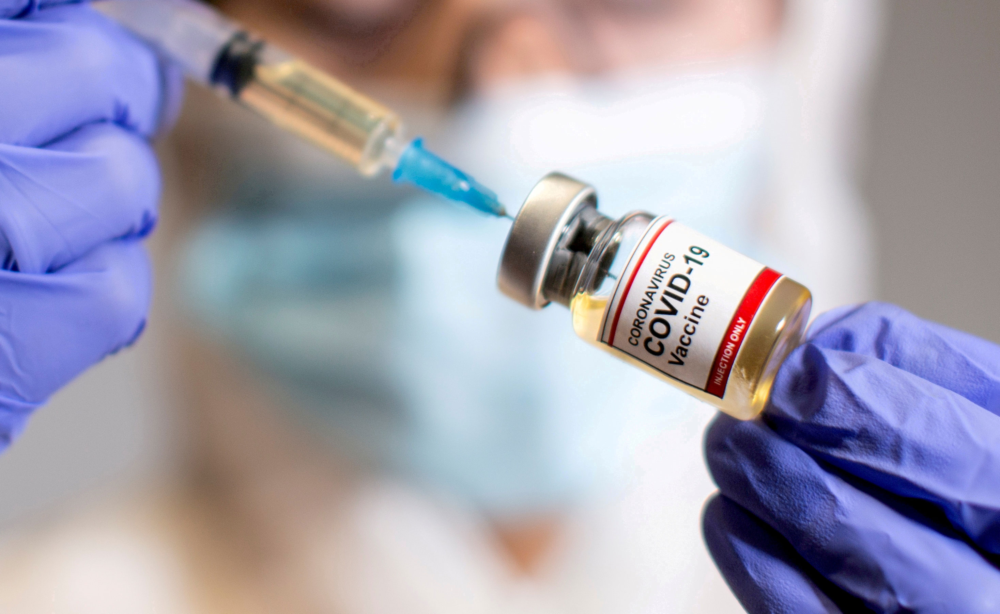
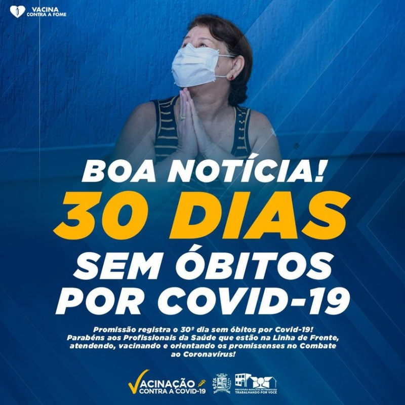

O governo de São Paulo anunciou nesta terça-feira (12) que a eficácia global da Coronavac, vacina contra o novo coronavírus desenvolvida pelos Instituto Butantan e pela chinesa Sinovac, é de 50,38%.

Saiba qual é a eficácia das principais vacinas contra a Covid-19

Boa notícia! 30 dias sem óbitos por Covid-19 em promissão!
Hoje, 1ª de Outubro, Promissão registra o 30º dia sem óbitos por Covid-19! Parabéns aos Profissionais da Saúde que estão na linha de frente, atendendo, vacinando e orientando os promissenses no combate ao Coronavírus!